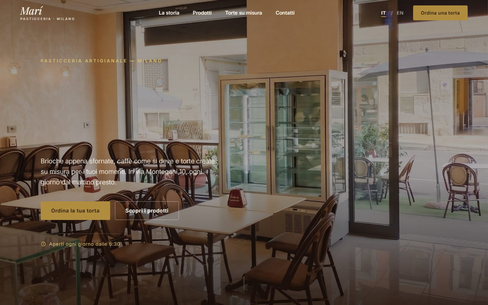

Pasticceria Marí
Pasticceria artigianale in via Montegani, Milano. Sito vetrina bilingue con le foto vere del locale e richiesta torte via WhatsApp: la vetrina digitale all'altezza del banco.
- COMMESSASito vetrina con richiesta torte via WhatsApp
- TESSUTOHTML, CSS e JavaScript — nessun framework
- CONSEGNAOnline, con le foto vere del locale